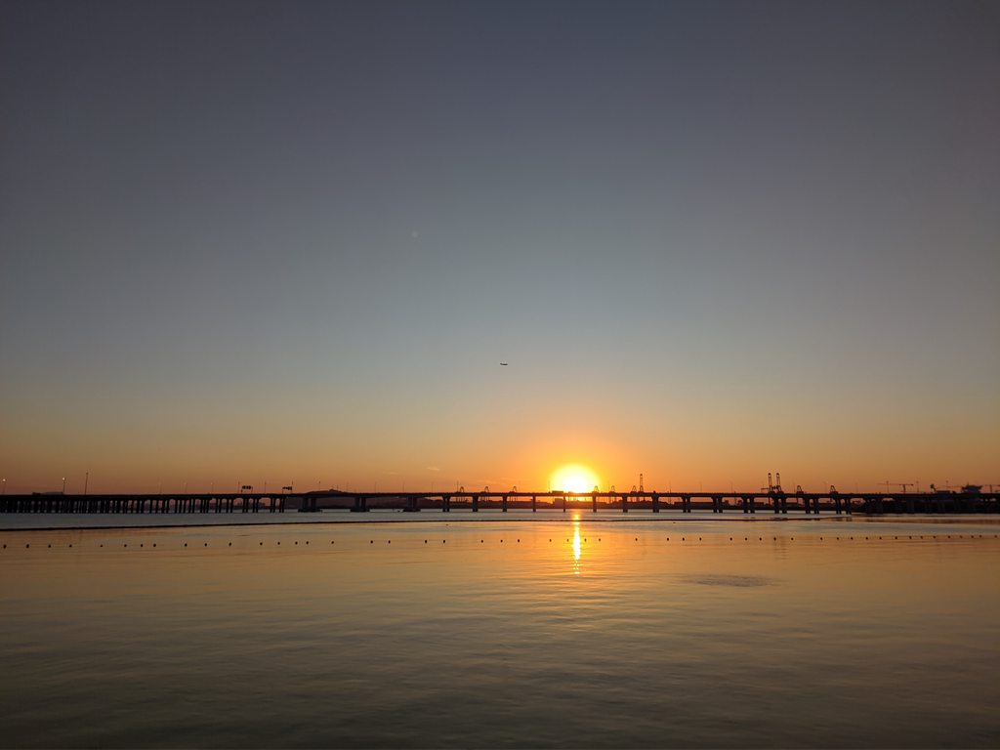

2022 年结束了，我想我也应该写一点什么，纪念一下。比起那些年轻有为的人，我列不出长长的一串书单，一系列的项目成果，一堆的人生大事来展示自己这一年的精彩，我的人生过得颇为平淡，以至于我拿起笔的时候都不知道应该写什么东西。所以就这样吧，让我的思维随机游走，回忆一下自己这一年的一些思想碎片吧。
今年我辞去了我的第 1 份工作，从北京搬到了深圳。相对于北京，深圳有着更好的空气，更温暖的环境，更明媚的自然景色，这一点令我很是喜欢。北方的冬天是漫长的，天空是阴霾的，在小半年的时间只能看见枯黄的草和光秃秃的树枝，仿佛抽根烟就能把整个北京点了。这样的天气总是会让人感到压抑苦闷，来到深圳之后，我住在离海边只有一两公里的地方，每当无聊的时候我就会去看看海，金色的夕阳总是会让我感到放松。工作方面我并没有做出什么漂亮的成绩，我只能给自己打 50 分，希望以后能够更加努力一些吧。

今年因为结石病，我体验了人生第一次全麻手术，一举达成了最高等级的孤独成就：独自一人做手术。其实也不完全是独自完成，我的好友得知以后专程去医院照顾我，但是因为核酸过期而被关在门外，手术后他新做的核酸结果出来了，得以进入病房陪伴了我一段时间，我真的真的非常感谢他，我会永远爱他。在医院排队等待手术的时候，由于止痛药的剂量不够，疼痛依然在折磨着我，而当时我已经一天一夜没有好好睡觉，处于崩溃的边缘。所以那是我今年第 1 次大哭，后来护士小姐姐给我加了更多的药，我才安稳的睡了一晚。那一刻我觉得我仿佛回到了婴儿的状态，只是单纯想要通过哭泣来表达自己的意图，我也意识到了，人在病痛面前会变得不堪一击。其实全麻手术的体验还是挺好的，麻醉药物进入静脉以后很快人就会和死去一样完全失去知觉，等再度醒来的时候，医生就已经完成手术了。在被麻醉之前，我一直在想，如果我不会再醒来的话，会因为什么而遗憾呢？想来想去也没有想到什么答案，药物生效让我停止了这个无聊的想法。
刚刚工作了一年多的我，生活就已经开始在痛苦和无聊之间反复摇摆了，今年一整年，我在 steam 平台只玩过两款游戏，CSGO 和星露谷物语，游戏时长也非常的少，总体上我几乎没有怎么玩过游戏。每天的生活都是在重复，无休无止的重复，起床、上班、下班、睡觉，唯一能让我觉得完全属于我的时间，就是在上班和下班过程当中塞上耳机，听着自己喜欢的音乐的时刻。我的生活已经开始程式化了，我有一双鞋坏了，我就从网上直接下单购买了另一双一模一样的，感到最难受的时刻就是打开自己的购物记录里面发现曾经买过的衣服下架了，我又不得不花时间再去寻找一款自己喜欢的颜色布料的衣服。
在通信方式上面，我尽量减少了对社交网络的依赖，不再去频繁的更新朋友圈，因为发朋友圈就是为了满足自己的一个分享的欲望，这个行为可以粗略分为把信息发出去和信息被别人看到这两个阶段，实际上我的分享欲望在我把信息发出去的一刻就已经满足了，而科技公司把我分享的东西推送给不知道是否愿意看的人，这个过程不是我能掌控的。所以我选择开了一篇笔记，来记录我任何想分享的碎片信息，我只完成分享这样一个动作，而别人是否看见，别人的反应是如何？我不再在乎。我最近重拾了邮件作为联系方式，交了一些能够通过邮件联系的朋友，我很喜欢这种方式，比起加好友、查户口、约吃饭、索然无味、删除…这种被科技催化加速的沟通方式，邮件让人与人之间的沟通变得慢了下来。发送邮件这么一个过程中产生的信息都是经过一定程度的思考的，在思考如何组织文字的过程当中，也是在整理自己的思绪，这样的交流比起一秒 10 条掺杂着表情包的即时通讯信息有着更高的质量。
今年必须记录的事情，就是众所周知的荒谬大事件。在做了整整八个月的核酸之后，我打算好好写写日记，准备整个系列文章出来记录一下这些生活里的美好细节，为此我还专门修理好了我的博客，收集了很多可以好好写写的素材，结果刚发了没几篇，我所乘坐的大巴车就来了个 361 度漂移大转弯，而我则如同加缪一样因为没系安全带被甩出了车外（1960 年 1 月 4 日，46 岁的加缪没有系安全带被甩出车外，因车祸死亡） . 我曾经问朋友：假设你对面是一个不了解荒谬为何物的人，能不能用我这个理科生熟悉的三段论，定义一下加缪所说的荒谬是什么？他告诉我不能抱着这样的过分的理性思维来阅读加缪。而在今天这个问题显然已经得到了完美的解决，倒不是说我想出了一个绝妙的答案，而是这一通操作已经让荒谬的观念深入人心，在赛里斯已经找不到不懂得荒谬为何物的人了，这个问题的前提已经不成立了，自然就失去了讨论的价值。
今年我彻彻底底的爱上了加缪，因为我从小到大对于自己的生活一直都有着一种奇怪的不自在的感觉，我一直不知道应该如何描述那种感觉。现在我知道了，那就是生活的荒诞，那也是因为我是自己生活完完全全的局外人。我几乎无法真正地融入任何圈子，我总是觉得自己是孤独的，即使和很多人在一起的时候，我也觉得自己是孤独的。当我第一眼看见加缪的照片的时候，我就爱上了他的眼神，如果让我许愿的话，我希望某一天我也能够拥有他那样的眼神。
生活不会因为新的一年开始就自动做出任何改变，在过去的一年当中感受到的那些荒诞，新的一年依然会重复。客观世界的重复就像一台巨大的运转着的机器，其实我没有办法去作出什么改变，也许我应该从自己的意识入手，改造改造自己的思想，试着从这重复和单调的世界当中去看出点有趣的东西，更应该有意识地留下更多自己的思考的痕迹，随着年龄的增大，我越来越害怕自己这个自己生活的局外人，完全忘记了自己的生活，回忆的时候只能看见一片空白。